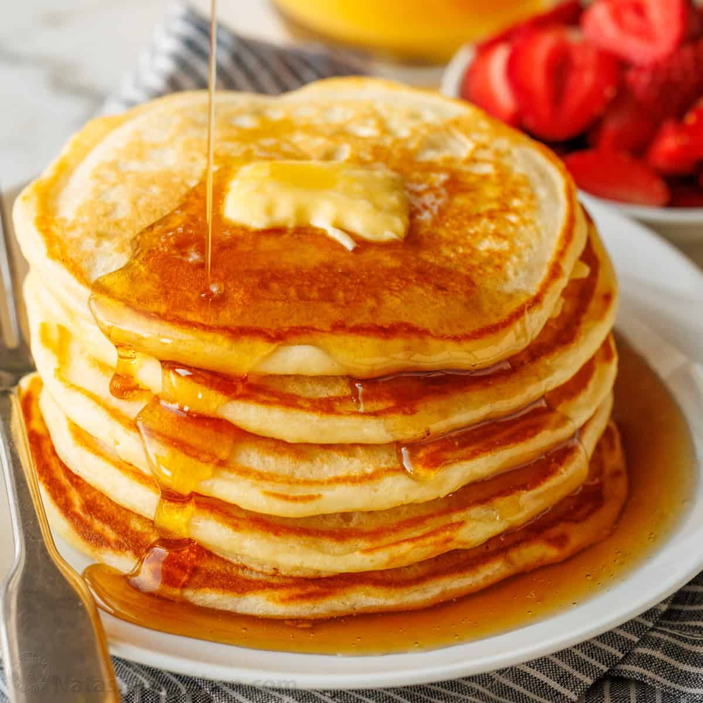

Buttermilk Pancakes

Description:
A buttermilk pancake is a flat type of batter bread like cake, often thin and round,
prepared from a starch-based batter that may contain eggs, buttermilk, and butter, and
then cooked on a hot surface such as a griddle or frying pan.
Ingredients:
- All-purpose flour
- Sugar
- Baking powder
- Baking sugar
- Salt
- Buttermilk
- Milk
- Eggs
- Butter
Steps:
- Mix the dry ingredients: Combine flour, sugar, baking powder, baking soda, and salt in one bowl.
- Mix the wet ingredients: Beat the buttermilk, milk, eggs, and melted butter together in a separate bowl.
- Make the pancakes: Add the wet ingredients to the dry ingredients and mix with a fork until the mixtures are just-blended.
Scoop the batter onto a hot, oiled pan and cook until the pancake is bubbly on the top.
Flip with a spatula and cook until both sides are brown.